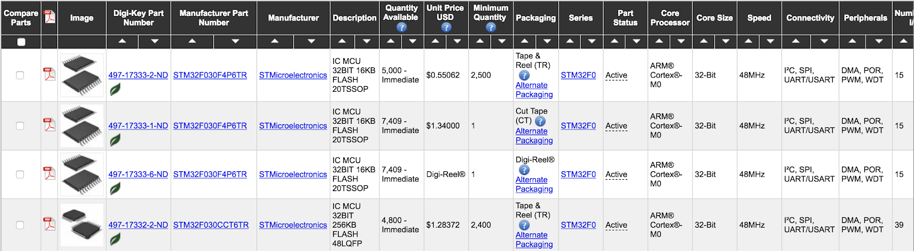
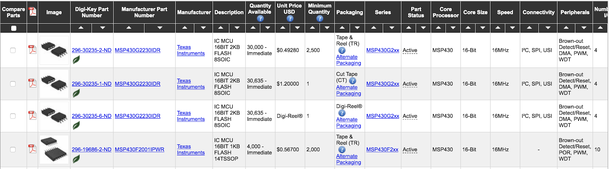
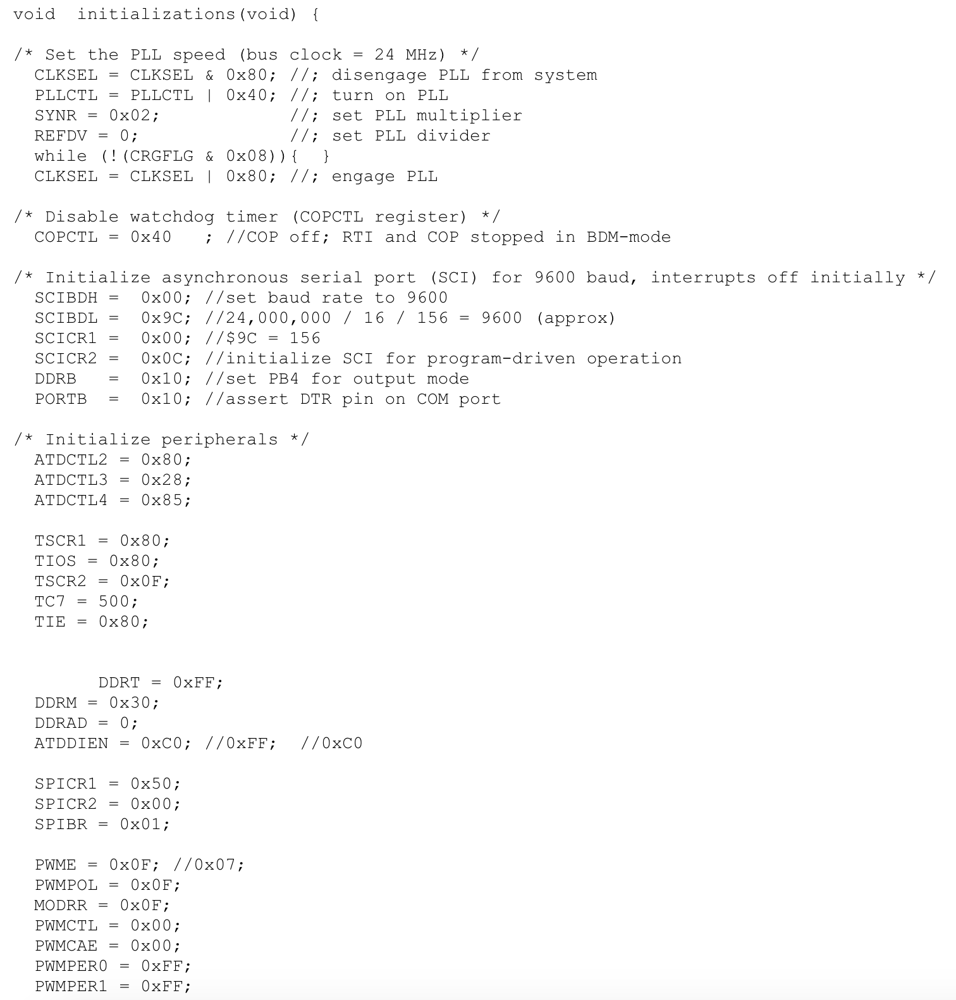
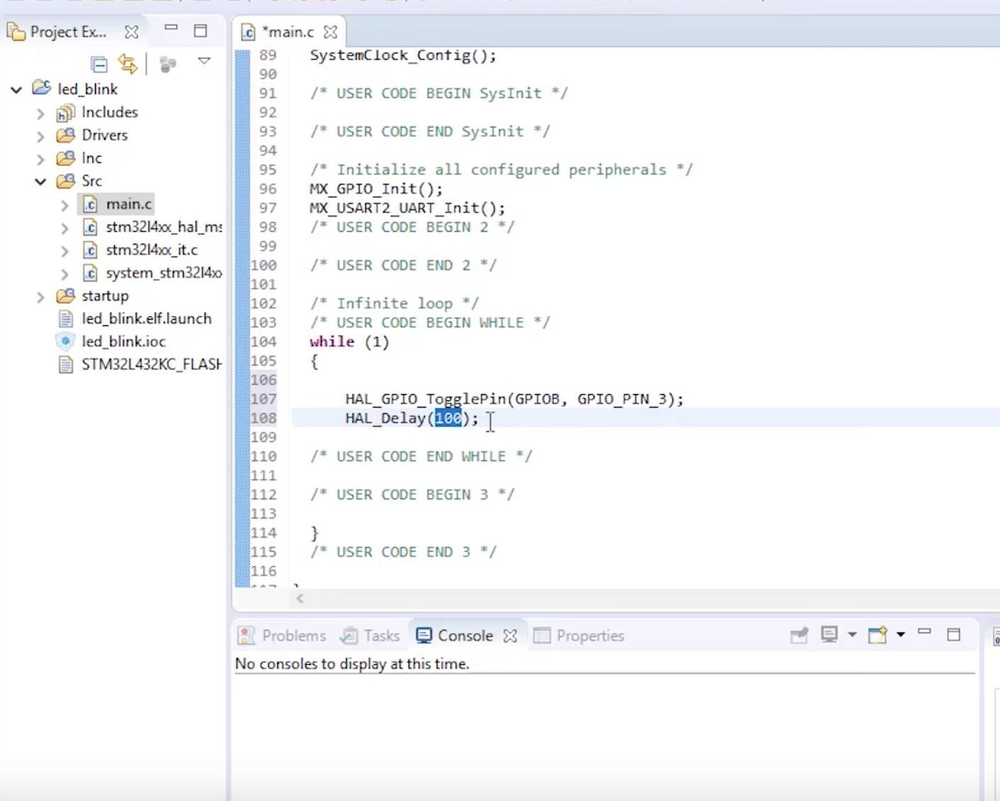
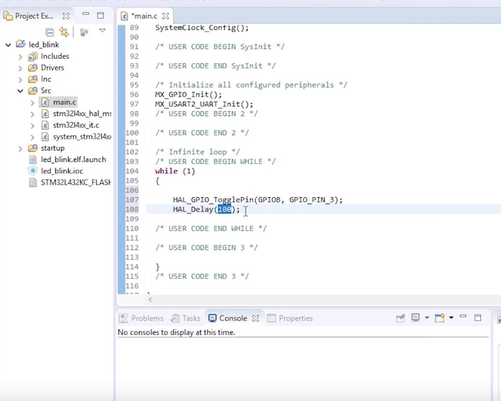
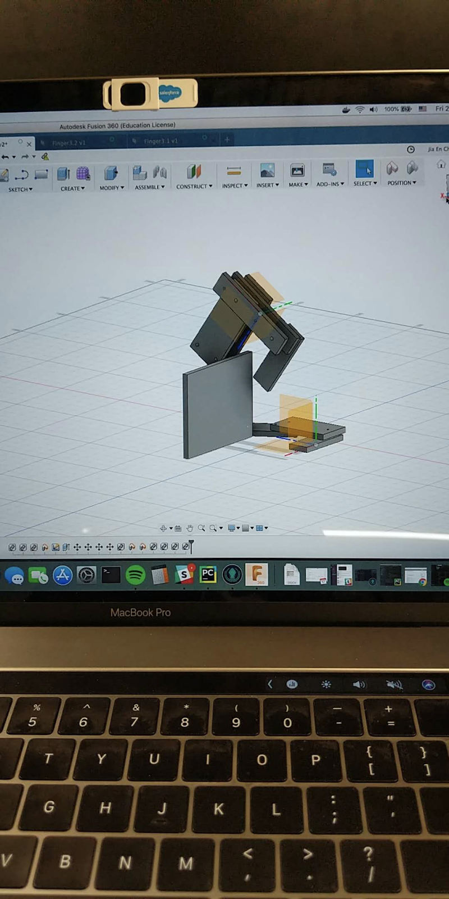
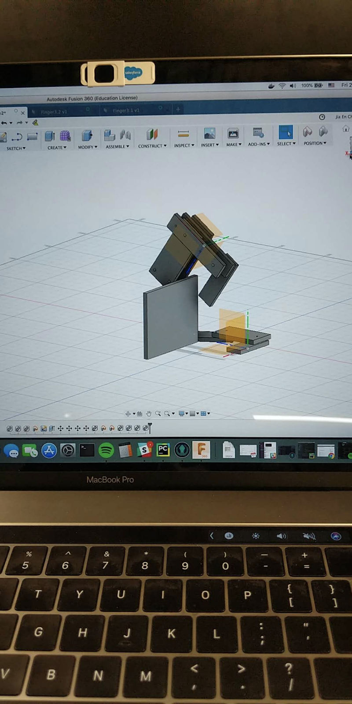
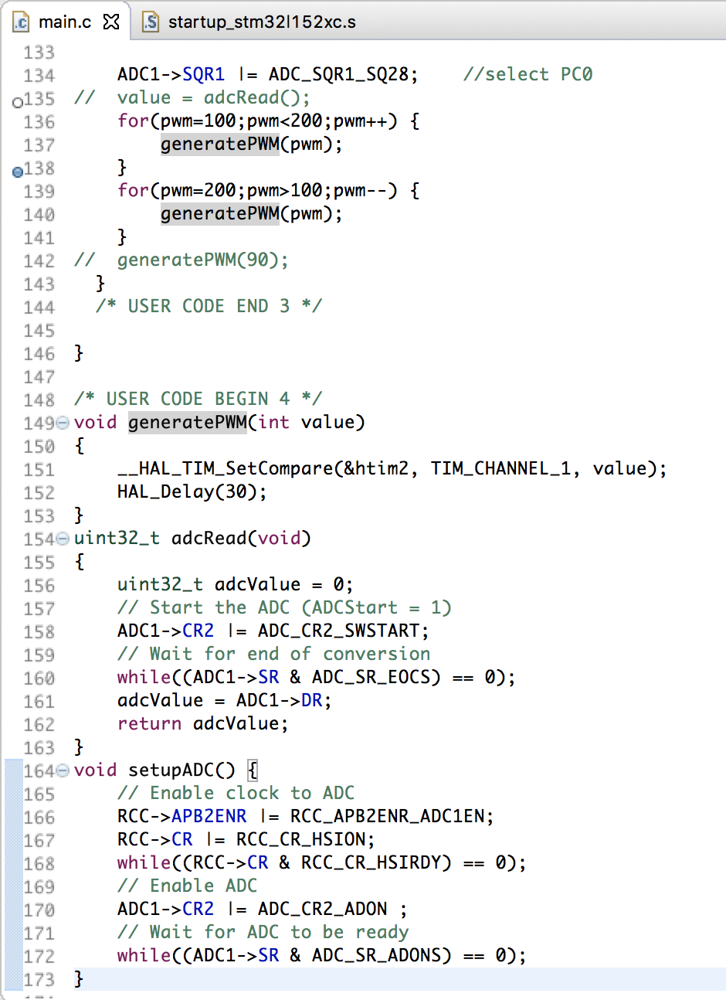
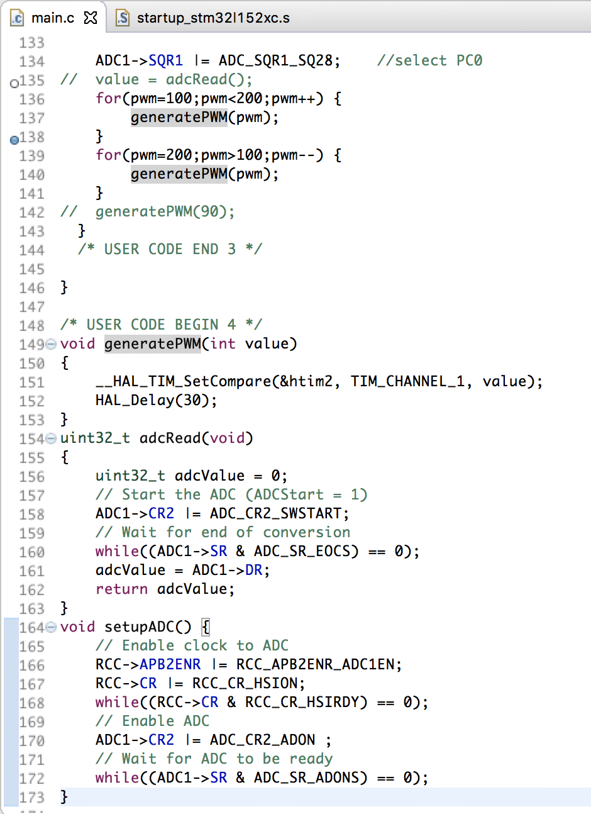

This week I have done some research about picking the right microcontroller for our project. I looked over the difference between MSP430 and STM32 family line. After several discussion and consideration, we decided to go with one of the STM32 microcontroller because the number of modules it provides fit our needs. The other team members also have more experience in using STM32 line of microcontroller because of previous classes or personal projects they have previously completed.


In order to complete the software overview, I have also looked into my previous project in ECE 362 to refresh on my embedded C code. I did some research about the structure of communication packets that are going to be transmitting between microcontrollers.
Besides, I created a flow chart for software architecture. The logic flow becomes much clearer after laying the flow chart. I believe that it also benefits the reader to understand better about how the code works. Other than that, I have created state diagram to describe each state of the overall system. This will also come in handy when we actually started coding. Lastly, my team and I started testing each module we currently possess to make sure each and every one is working correctly. We tested the time taken and power needed for Peltier Cooler to generate temperature difference. We also make sure that linear actuator, servo, and robotic hand work.

 

 



 
